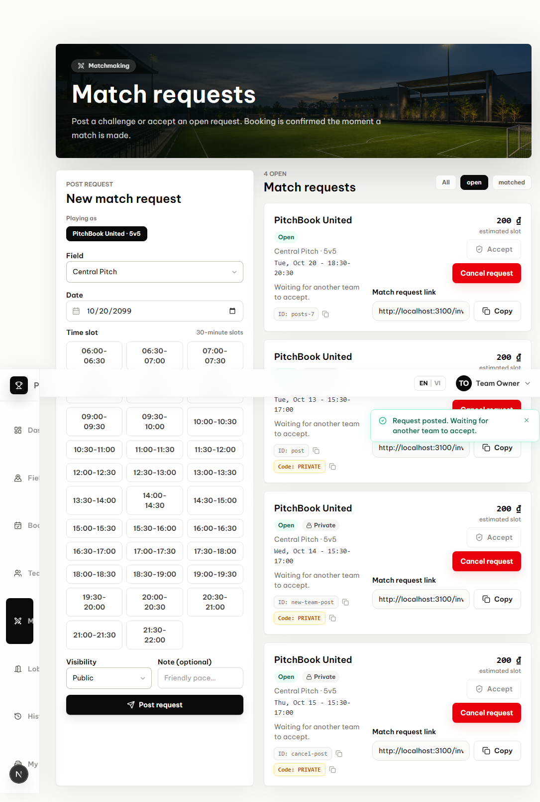
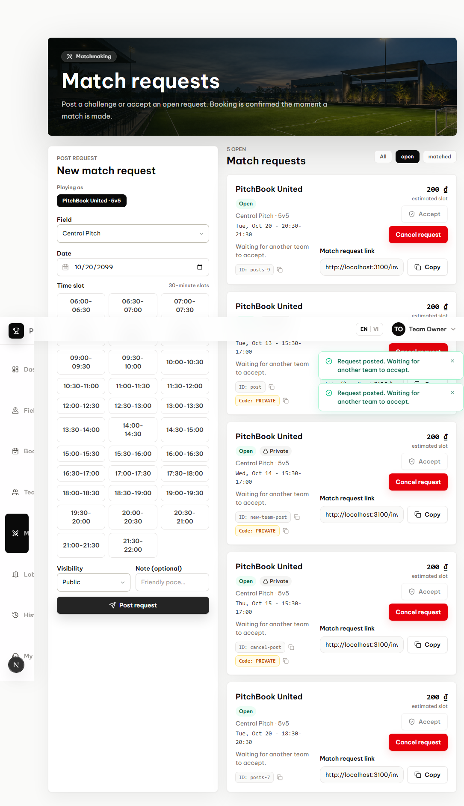
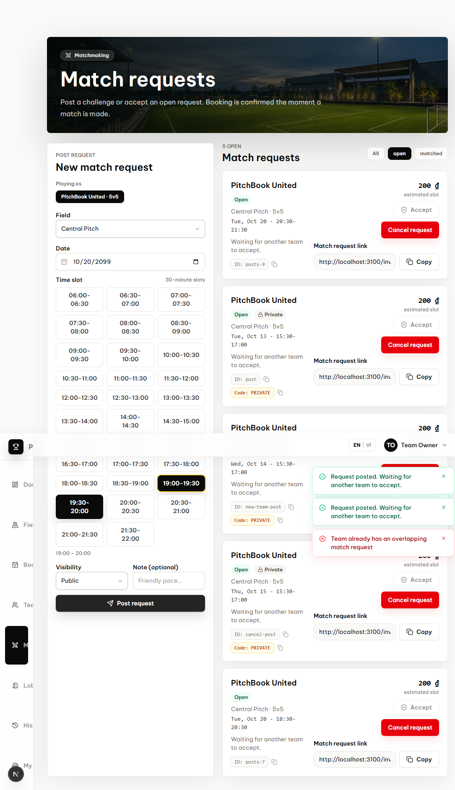
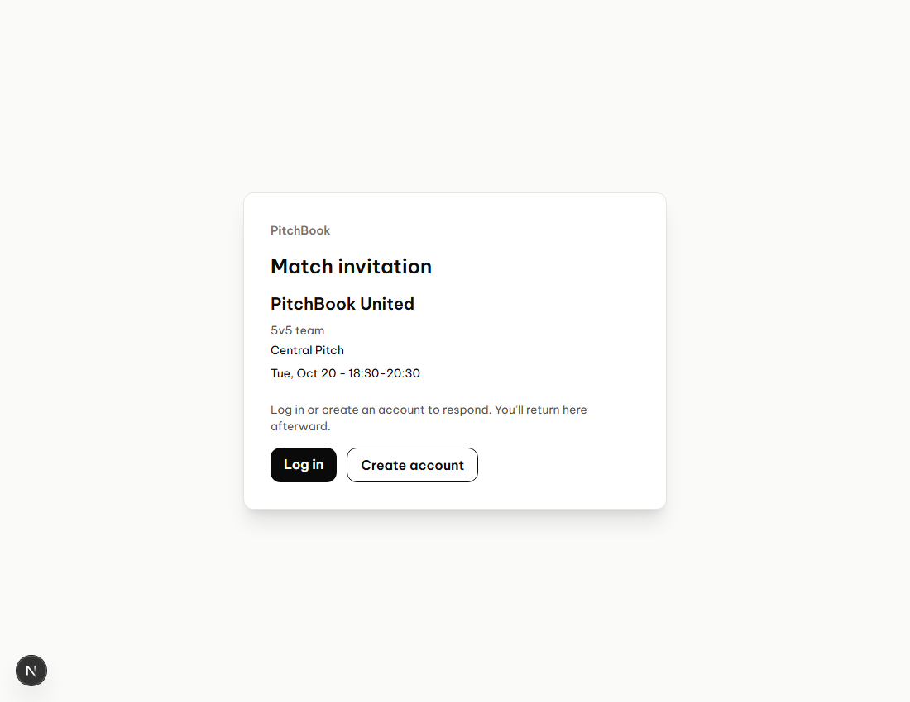
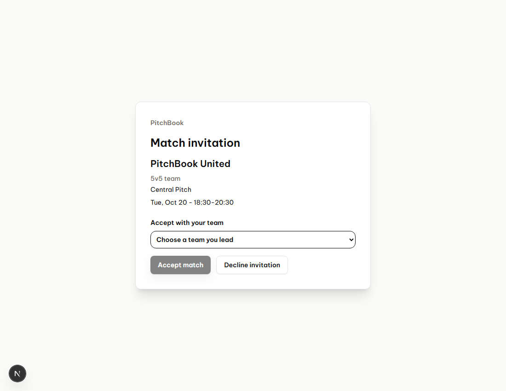
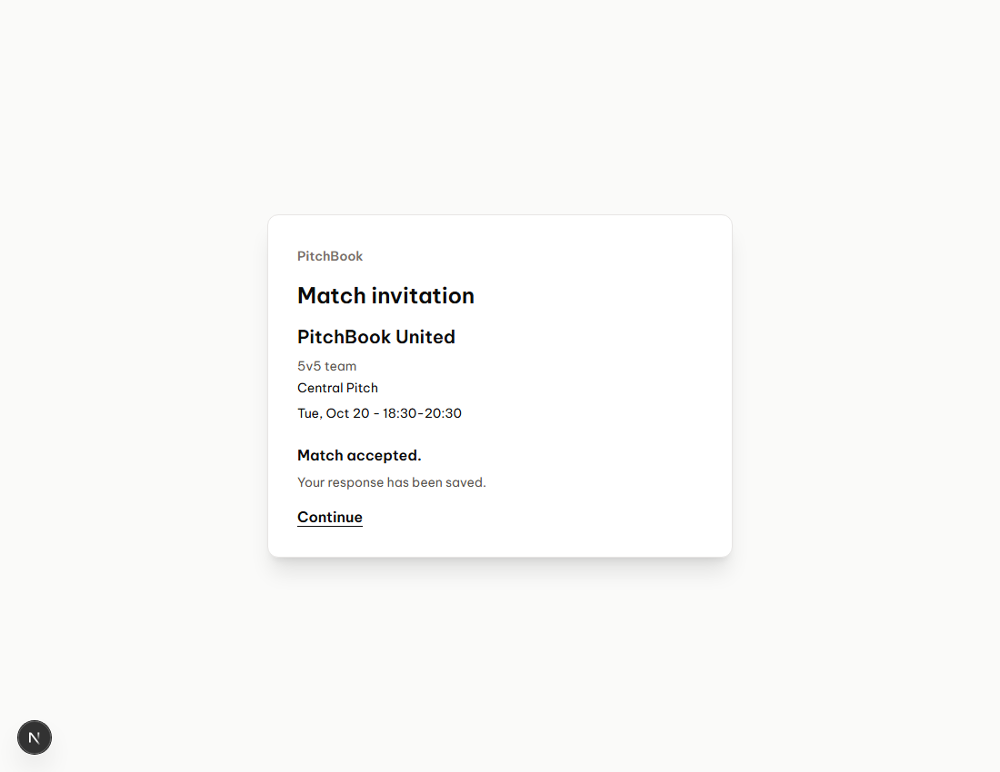

PitchBook invitation demo
Recorded from the actual app with isolated sample data. No remote database changes.
Posting 18:30–20:30 creates an open request, uses the field timezone without extra database columns, and does not accept it.
The same team can post a second request immediately next to the first one.
An overlapping request is rejected without changing the existing requests.
The freshly posted request link remains available and offers login or registration.
The other team must explicitly accept; opening the link and signing in do not confirm a match.
Only the opposing team's explicit acceptance confirms the match.